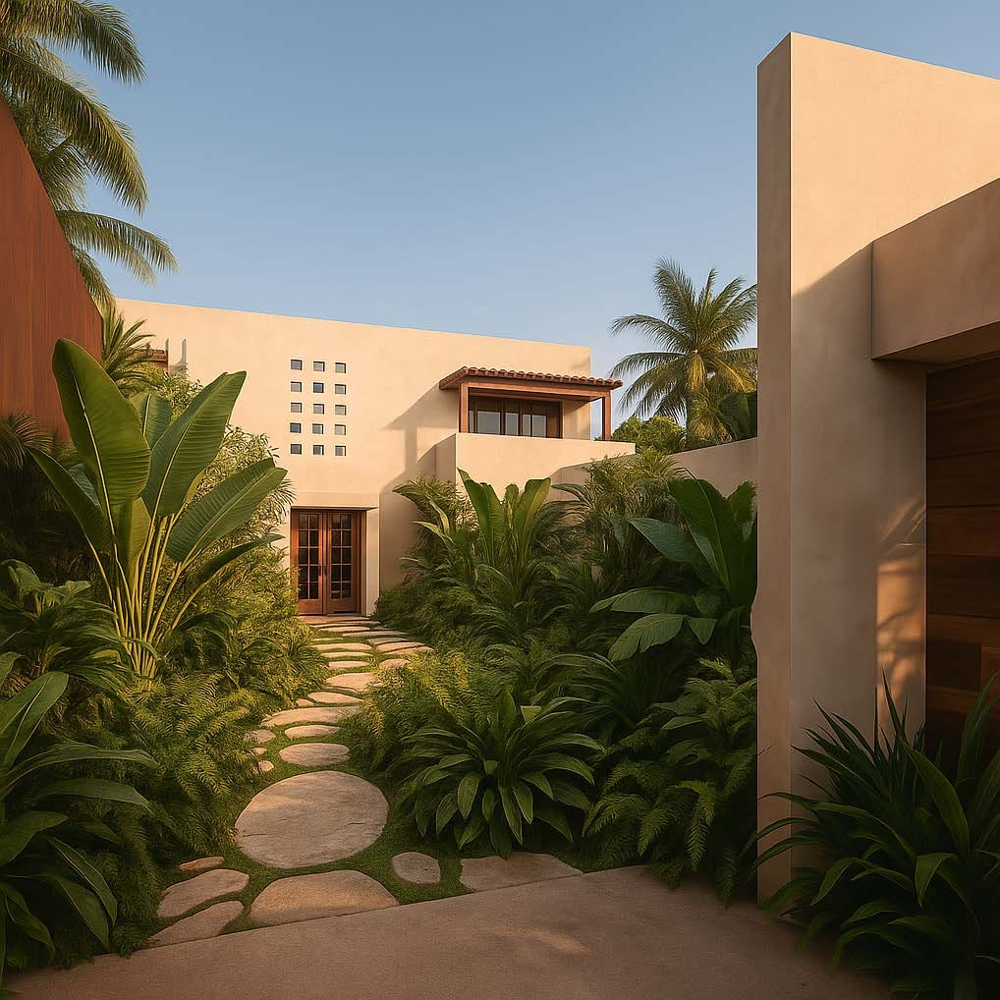
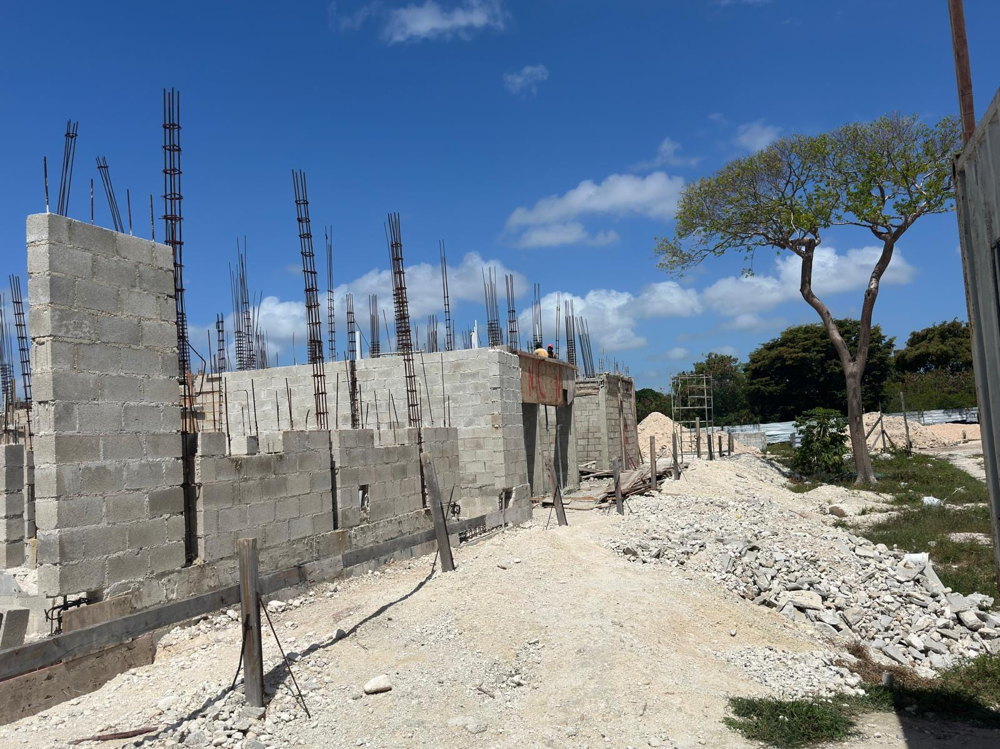
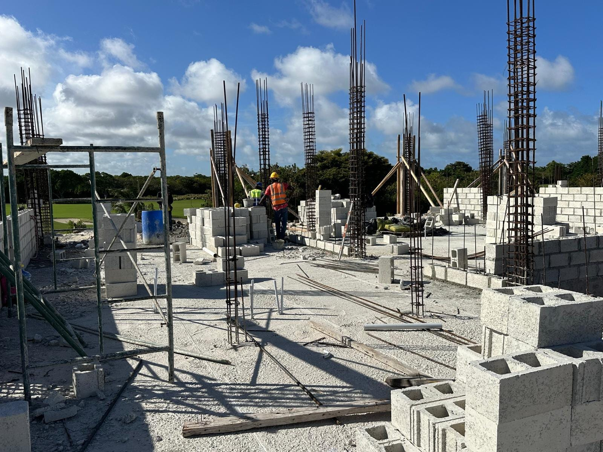
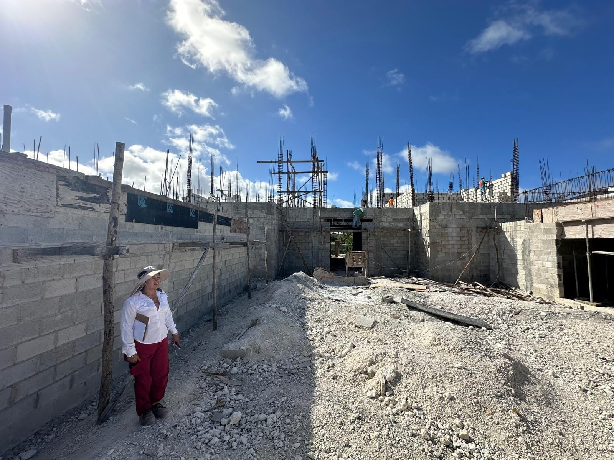

Corales 80
EFC Holdings fue contratado para reformular el proyecto cuando la estructura principal ya se encontraba construida. Desarrollé un nuevo concepto arquitectónico y presenté el rediseño al cliente, lo que derivó en la contratación de EFC para las etapas posteriores. A partir de allí desarrollé el paquete ejecutivo completo de arquitectura e interiorismo, incluyendo el diseño de iluminación y el concepto de paisajismo, mientras coordinaba estructura e instalaciones mecánicas y sanitarias con el contratista local. Mi participación incluye también procurement, desarrollo parcial de FF&E y soporte continuo a obra mediante la resolución de consultas técnicas y de diseño.